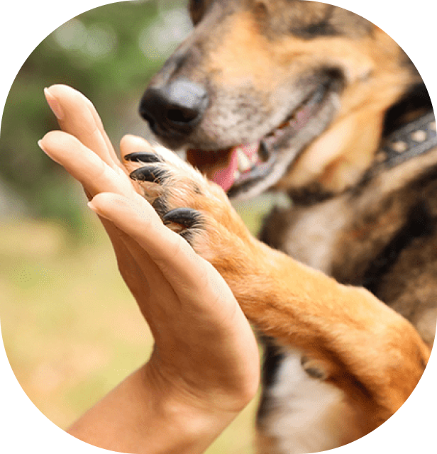
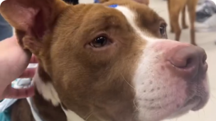
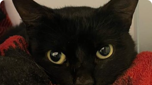
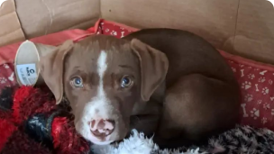
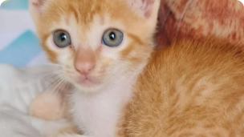

Resgate esperança, adote amor
Nosso compromisso é conectar animais resgatados com lares cheios de amor. Encontre seu novo companheiro ou ajude a reunir famílias separadas, fazendo a diferença na vida de cada pet que precisa de você.
Conheça alguns de nossos pets :)



